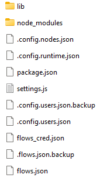

Installation d'une version portable
- Lien de téléchargement : nodeJs
- Choisir Windows Binary (.zip)
- Mettre le fichier launch node red dans le répertoire d'installation pour pouvoir utiliser nodeJS en ligne de commande.
- À partir du terminal installer nodered en ligne de commande :
$ npm install -g --unsafe-perm node-red
- Il n'est pas nécessaire d'autoriser le pare-feu.
- Mettre le fichier launch node red dans le répertoire d'installation. Après exécution du fichier : création du répertoire utilisateur (.node-red) dans le répertoire d'installation de nodeJS.
- Voir lien suivant pour les options et arguments de node-red Running Node-RED locally.
Espace de travail
vscode_workspace
│ ├── web_dev_with_node_red
Redéploiement d'une version portable avec des modules déjà installé (suppression des flots et des réglages)
Supprimer tous les fichiers du dossier .node excepté le fichier package.json, Node-RED recréera les fichiers à son lancement. 